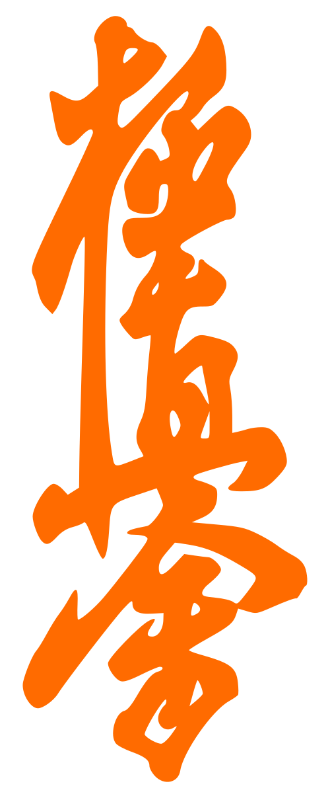

KyokuTrack
IFK Kyokushin
Accueil centré sur le suivi de forme et la préparation physique. Touche l'anneau pour faire varier la forme ; la carte « Programme en cours » ouvre la fiche ceinture (vidéo + photo). Tweaks : accent, ambiance et intensité visuelle remodèlent l'ambiance.
KyokuTrack — flux complet
Accueil · fiche ceinture · bibliothèque (navigue dans le téléphone)
Tweaks
Remodèlent l'ambiance visuelle en direct.